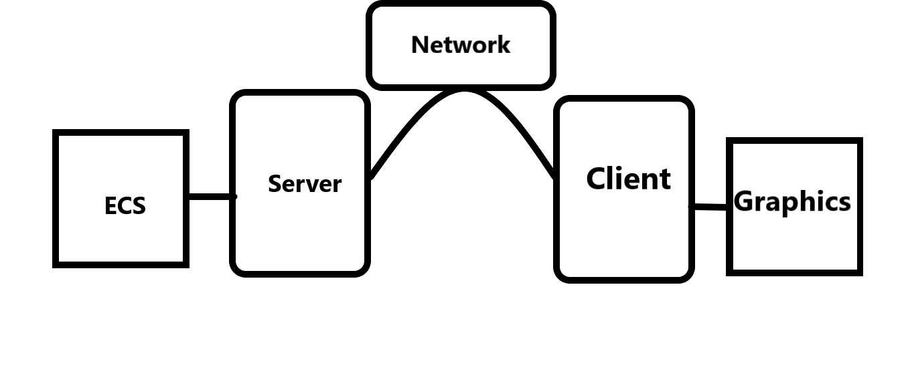

Choosing Raylib as our primary graphics library brings several advantages over alternatives like SFML or SDL.
One of its key strengths is its ease of use, allowing our team to focus initially on how to design and build the game, rather than getting bogged down in learning how to use the library itself.
This simplicity also means that Raylib can be easily understood and utilized by other users, enabling them to modify and customize the game even if they don't have an extensive background in development, making our project an open-source game.
Raylib is also integrate cross-platform, which makes sharing our game across different systems, like Windows, easier.
Unlike other libraries that may require additional configuration for each platform, Raylib is designed to work consistently across various operating systems right out of the box.
This cross-platform support reduces the effort needed to adapt the game for different environments, making it easier for us to reach a wider audience without needing to make significant adjustments to the codebase.
Additionally, Raylib comes with built-in 3D support, which can be seen as a valuable bonus for the future.
Even if our current project focuses on 2D gameplay, having the option to expand into 3D later on provides flexibility for game enhancements or new features down the line.
This potential for future makes Raylib a perfect choice, allowing us to adapt and improve our game as new ideas emerge.
We use the Entity Component System (ECS) only on the server side to optimize data exchange between the client and server.
By centralizing ECS operations on the server, we reduce the frequency of updates that need to be sent to clients, which in turn limits the number of packets sent over the network.
This approach is especially helpful when using UDP for communication, as it reduces the chance of data loss due to UDP’s lack of a stable connection.
By lowering the amount of transmissions, we can ensure a more reliable data flow, improving overall performance and consistency in real-time interactions.
